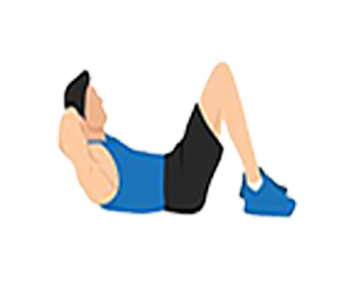

<ion-header [translucent]="true">
  <ion-toolbar color="primary">
    
    <ion-title class="t1">تمرینات</ion-title>
  </ion-toolbar>
</ion-header>

<ion-content [fullscreen]="true" >
  <ion-refresher slot="fixed" pullingIcon="chevron-down-circle-outline" (ionRefresh)="handleRefresh($event)">
    <ion-refresher-content></ion-refresher-content>
  </ion-refresher>
  <div class="scrollable" >

    <ion-searchbar [debounce]="1000" class="custom-searchbar" show-cancel-button="focus"  placeholder="جستجو در تمرینات" (ionInput)="filterItems($event)"></ion-searchbar>

    <ion-list>
      <ion-item *ngFor="let item of filteredItems">
      <ion-thumbnail slot="start">
      
      </ion-thumbnail>
      <ion-label>
      <h2   #task >{{ item.label }}</h2>
      <p>{{ item.description }}</p>
      </ion-label>
      <ion-button fill="outline" slot="end" (click)="openModal(task.innerHTML)">
        مشاهده
        <ion-icon name="chevron-back-outline"></ion-icon>
      </ion-button>
      </ion-item>
      </ion-list>

      
    <!-- Modal 1 -->

  

  <ion-modal [isOpen]="is_open_1">
    <ng-template>
      <ion-header>
        <ion-toolbar color="primary">
          <ion-buttons slot="end">  
            <ion-button fill="clear" (click)="close_1()">  
              <ion-icon name="chevron-forward-outline"></ion-icon>
            </ion-button>
          </ion-buttons>
          <ion-title>شکم</ion-title>
        </ion-toolbar>
      </ion-header>
      <ion-content>
        <ion-item lines="none" (click)="Open_1_1()">
          <ion-thumbnail slot="start" >
            
          </ion-thumbnail>
          
            <ion-text >کرانچ</ion-text>   
          <ion-icon slot="end"  name="chevron-back-outline"></ion-icon>
        </ion-item>

        <ion-item lines="none" >
          <ion-thumbnail slot="start" >
            
          </ion-thumbnail>
            <ion-text >دراز نشست</ion-text>   
          <ion-icon slot="end"  name="chevron-back-outline"></ion-icon>
        </ion-item>

      </ion-content>
    </ng-template>
  </ion-modal>

  

  <ion-modal class="modal1" [isOpen]="is_open_1_1">
    <ng-template>
      <ion-header>
        <ion-toolbar color="primary">
          <ion-buttons slot="end">  
            <ion-button fill="clear" (click)="close_1_1()">
              <ion-icon name="chevron-forward-outline"></ion-icon>
              
            </ion-button>
          </ion-buttons>
          <ion-title class="t1"  >کرانچ</ion-title>
        </ion-toolbar>
      </ion-header>
      <ion-content>
        
         <ion-card>
           
          <video class="video1" src="../../assets/gifs/crunches1.mp4" autoplay controls></video>
            <ion-card-title class="t1">کرانچ </ion-card-title>
            
            <ion-label class="t1">حرکت کرانچ یک تمرین ساده و موثر برای تقویت عضلات شکم است. این حرکت را با کنترل انجام دهید تا تاثیر بیشتری در تقویت عضلات شکم داشته باشد</ion-label>

            
        </ion-card> 
      </ion-content>
    </ng-template>
  </ion-modal>


  <!-- Modal 2 -->

  

  <ion-modal [isOpen]="is_open_2">
    <ng-template>
      <ion-header>
        <ion-toolbar>
          <ion-buttons slot="end">  
            <ion-button fill="clear" (click)="close_2()">
              <ion-icon name="chevron-forward-outline"></ion-icon>
              
            </ion-button>
          </ion-buttons>
          <ion-title>پشت</ion-title>
        </ion-toolbar>
      </ion-header>
      <ion-content>
        <ion-item lines="none" >
          <ion-thumbnail slot="start">
            
          </ion-thumbnail>
          
            <ion-text >زیر بقل خم</ion-text>   
          <ion-icon slot="end"  name="chevron-back-outline"></ion-icon>
        </ion-item>
      </ion-content>
    </ng-template>
  </ion-modal>
  
  <!-- Modal 3 -->
    
 
  
</div>
</ion-content>

<ion-footer>
  <ion-toolbar>
<ion-tabs >
  <ion-tab-bar >
    <ion-tab-button (click)="profile()" >
      
    </ion-tab-button>
    <ion-tab-button (click)="explore()" >
      
    </ion-tab-button>
    <ion-tab-button (click)="meals()">
        
    </ion-tab-button>
    <ion-tab-button (click)="Exercises()">
      
    </ion-tab-button>
    
  </ion-tab-bar>
</ion-tabs>
</ion-toolbar>
</ion-footer>